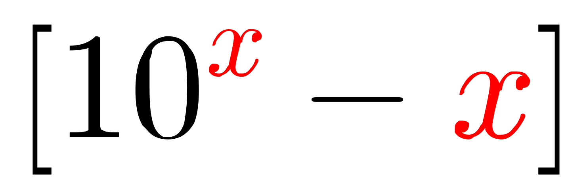
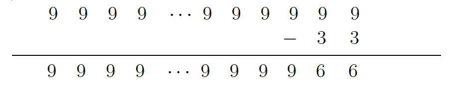

Problem of the Week
Problem E and Solution
What Exponent?
Problem
A two-digit positive integer \(x\) exists such that when the expression \((10^x-x)\) is evaluated, the sum of the digits of the difference is 300.
Determine the value of the exponent \(x\).

Solution
When \(10^{x}\) is written out there is a one followed by \(x\) zeroes, a total of \((x+1)\) digits. When we attempt to subtract \(x\) from this number using the traditional algorithm for subtraction we are required to borrow.
So instead, we will convert to a question that has the same answer and will be easier to work with. The expression \((10^x-x)\) will have the same difference as \((10^x-1)-(x-1)\). The number \((10^x-1)\) is one less than \(10^x\). This new number is then made up of \(x\) nines. Let’s look at a few specific cases to see if we can determine what is happening in this problem.
| \(x\) | \(10^x-1\) | \(x-1\) | \((10^x-1)-(x-1)\) |
|---|---|---|---|
| \(10\) | \(9\,999\,999\,999\) | \(9\) | \(9\,999\,999\,990\) |
| \(11\) | \(99\,999\,999\,999\) | \(10\) | \(99\,999\,999\,989\) |
| \(12\) | \(999\,999\,999\,999\) | \(11\) | \(999\,999\,999\,988\) |
| \(13\) | \(9\,999\,999\,999\,999\) | \(12\) | \(9\,999\,999\,999\,987\) |
A pattern seems to be forming in the digits of the difference. As the exponent \(x\) increases by 1, the number of nines to the left of the rightmost two digits increases by 1. If we ignore the rightmost two digits, we can predict the number of leading nines in the difference by comparing to the exponent.
| Exponent | Number of nines to the left of two rightmost digits |
|---|---|
| \(10\) | \(8\) |
| \(11\) | \(9\) |
| \(12\) | \(10\) |
| \(13\) | \(11\) |
| \(x\) | \(x-2\) |
We have not proven this result. We will use the result to find the value of \(x\) that gives the difference a digit sum of 300. We will then verify that the result is correct.
Ignoring the rightmost two digits, the difference would be a number made up of \((x-2)\) nines and the digit sum would be \(9(x-2)\). We want \(x\) so that \[\begin{aligned}
9(x-2)&<&300\\
9x-18&<&300\\
9x&<&318\\
x&<&35\frac{1}{3}\\\end{aligned}\] Since the exponent \(x\) is a positive two-digit integer, \(x\le 35\). Note, this is not necessarily the answer. It simply is the maximum value that \(x\) could be.
If \(x=35\), the rightmost two digits are \(100-35=65\). The digit sum is \(33\times 9 + 6+5=308\). This is not the digit sum we are looking for.
If \(x=34\), the rightmost two digits are \(100-34=66\). The digit sum is \(32\times 9 + 6+6=300\).
If our pattern is correct, the value of \(x\) is 34. We will verify the result. Remember, \[10^{34}-34=(10^{34}-1)-(34-1)=(10^{34}-1)-33\]
\((10^{34}-1)\) is a 34-digit number consisting of exactly 34 nines.

The difference still has 34 digits. The total number of digits is made up of the rightmost two digits and 32 nines. The digit sum is \(6+6+32\times 9=300\).